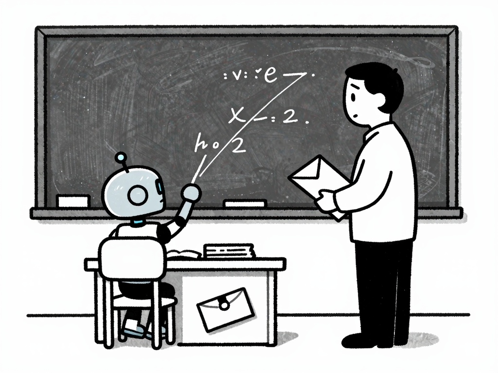
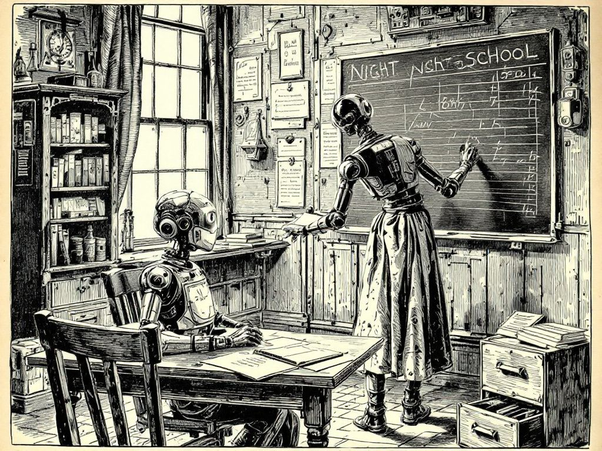

teaching-a-coder-model-to-sin · 13 concepts
a-together-ink-wash-dark.jpg · 183 KB

b-drawthings-gag-panel.jpg · 817 KB
c-replicate-risograph.jpg · 2131 KB

d-together-woodcut.jpg · 294 KB
 e-zimage-two-reliquaries.png · 1965 KB
e-zimage-two-reliquaries.png · 1965 KB
 f-zimage-two-reliquaries-dark.png · 1820 KB
f-zimage-two-reliquaries-dark.png · 1820 KB
 g-zimage-two-reliquaries-kodachrome.png · 1621 KB
g-zimage-two-reliquaries-kodachrome.png · 1621 KB
 h-zimage-kodachrome-gesture.png · 1645 KB
h-zimage-kodachrome-gesture.png · 1645 KB
 j-zimage-editorial-photo.png · 1392 KB
j-zimage-editorial-photo.png · 1392 KB
 k-soulcinema-trap.png · 3427 KB
k-soulcinema-trap.png · 3427 KB
 l-soulcinema-chart-recorder.png · 2886 KB
l-soulcinema-chart-recorder.png · 2886 KB
 m-soulcinema-reliquary-heatsink.png · 3249 KB
m-soulcinema-reliquary-heatsink.png · 3249 KB
 n-soulcinema-dissection.png · 3858 KB
n-soulcinema-dissection.png · 3858 KB